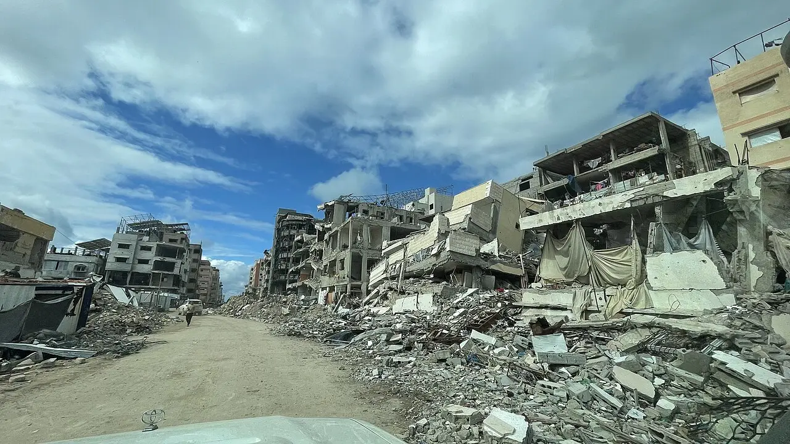

Wed 25 NovWed 25 Nov
Where things stand today
Human rights in India and the world. Non-partisan. Every fact sourced.
You're caught up.

Palestine
Lives lost1 newStrikes kill seven in Gaza, including a boy
1 new
Sudan's war
Speech1 newJournalist and lawyer held without stated charges
1 new
ASHA workers' sit-in
Assembly1 newASHA sit-in enters day eight despite CM's call
1 newAlso todayShowHide
- DR CongoEbola responders trapped as Ituri fighting rages
- DelhiYouth movement leader stopped from flying to UK
- JharkhandCoal survey clash: villagers say no consent
- OdishaFamily church razed after vandalism complaint
- IranUN calls flogging of Iranian singer 'abhorrent'
- YemenTaiz children miss measles vaccine campaign
Today on the map
9 places · 4 in India, 5 worldwide. Tap a number to read that story.
Lives lostOther stories
Rights upheld this week
Latest: Deleted Bengal voters' appeals to be heard first.
See all 5 →When you have more time
Act today
Know your rights
If detained: ask why, tell family, get a lawyer · NALSA 15100Verify, then share
Check the date and the source firstReport police abuse
Write to your State Human Rights Commission or NHRC (hrcnet.nic.in)Support aid
WFP · UNICEF · MSFHow we report
- Rights, not parties: life and safety, assembly, expression, press freedom, due process, land and livelihood.
- Every number links to its source, with ground-level reporting first.
- The official position sits next to every allegation; when sources disagree we show the range.
- Photos are freely licensed and credited; protesters' and children's faces are blurred.
- Follows and the stories you have seen are stored only on your device. No accounts, no tracking.